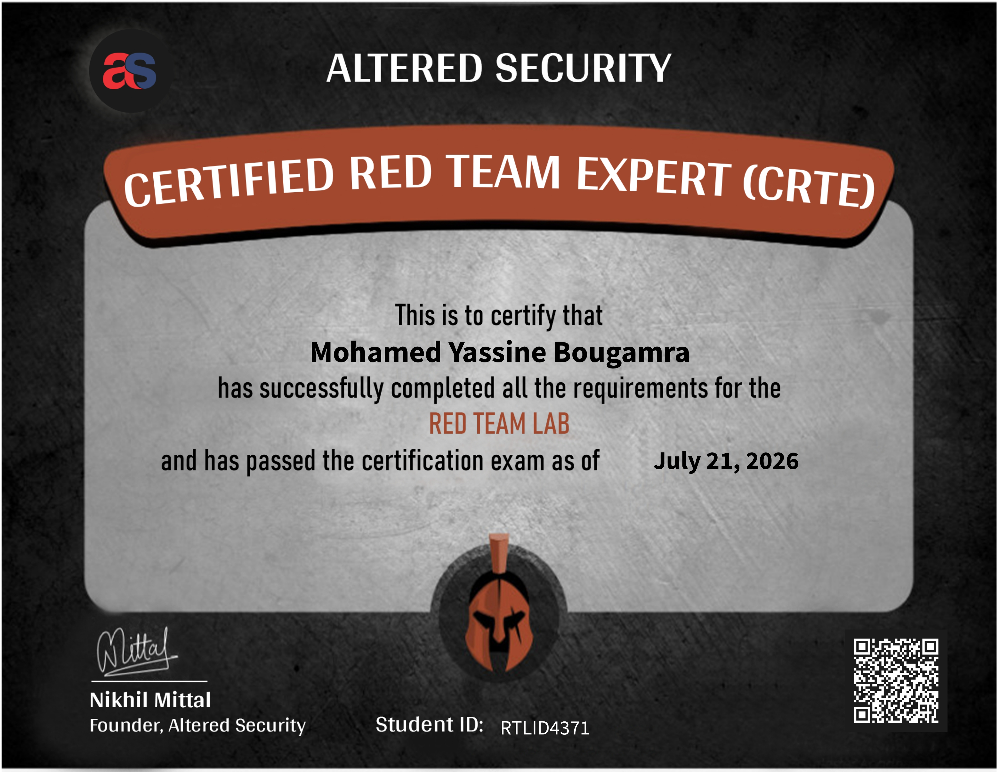

Overview
The Certified Red Team Expert (CRTE) is an advanced offensive security certification offered by Altered Security. It is designed for practitioners who already have a solid grasp of Active Directory attacks and want to push further into multi-domain, multi-forest environments, evasion of modern defenses, and realistic red team tradecraft.
If you have a solid AD foundation, this is the natural next step. If you are just starting out in offensive security, you will want to build that foundation first because CRTE does not hold your hand.
CRTE: Certified Red Team Expert
Provider: Altered Security
Focus: Enterprise Active Directory red teaming
Goal: Operate like an internal threat actorCertification Snapshot

Background
By day, I work on application security and web application penetration testing. I decided to take up CRTE as a personal challenge and learning opportunity to prepare for the OSCP+.
The course felt appealing because it goes deeper into PowerShell and Windows command-line methodology, covers more AD attack vectors, stays purely in the Windows world, and spends real time on Microsoft Defender for Endpoint and Microsoft Identity Protection concepts.
What Is CRTE?
The Certified Red Team Expert (CRTE) is an advanced offensive security certification offered by Altered Security. It is designed for practitioners who already have a solid grasp of Active Directory attacks and want to push further into multi-domain, multi-forest environments, evasion of modern defenses, and realistic red team tradecraft.
If you have a solid AD foundation, this is the natural next step. If you are just starting out in offensive security, you will want to build that foundation first because CRTE does not hold your hand.
Course Review
The CRTE course is delivered through a combination of slide-based, video-based material and a dedicated lab environment. The content is dense and unapologetically technical.
Over the span of 2 months, I spent approximately 3 hours each day after work as well as during the weekends to routinely tackle the course videos and the respective labs. The course videos consisted of recordings of instructor Nikhil Mittal’s lectures, combined with hands-on demos of a full attack chain, commencing from an assumed breached scenario. The hands-on demos were useful because the occasional issues encountered during command execution helped when troubleshooting similar problems in my own labs.
If you prefer not to watch the videos, PDFs and slides are also provided for study. Along the way, I kept notes on crucial attacks and associated tools and commands in my own cheat sheet.
I also encountered occasional technical difficulties when tackling the labs on my student virtual machine, but the Altered Security staff were prompt and responsive when I asked for help through the dedicated Discord channel.
Core Topics
The course focuses on abusing misconfigurations and default behaviors rather than relying on CVEs or unpatched vulnerabilities. This distinction matters. The lab is patched, and you will not find your way through by scanning for known exploits. Instead, you learn to weaponize the way Active Directory is designed to work: trusts, delegations, ACLs, and protocol behaviors that exist in virtually every enterprise environment.
Key areas covered:
- Multi-domain and multi-forest environments - one of the most distinctive aspects of CRTE. The lab spans multiple domains across multiple forests, forcing you to understand forest trust abuse, cross-forest attacks, and the subtle differences in how permissions and tickets behave across trust boundaries.
- Privilege escalation and lateral movement - LAPS, gMSA, Kerberos delegation variants, ACL-based attacks, and more.
- Persistence mechanisms - Golden tickets, Silver tickets, Diamond tickets, skeleton keys, and custom SSP techniques for maintaining access.
- Antivirus and EDR bypass - AMSI bypass, ETW patching, obfuscation, and adapting tooling to evade modern security stacks.
- C2 with Sliver - implant generation, C2 profiles, and pivoting with the open-source Sliver framework from BishopFox.
The Lab
The lab environment really is great.
You are dropped into a multi-domain, multi-forest Active Directory network. Everything is patched. Defender is running. There are no low-hanging CVEs to grab. Your only path forward is understanding the environment deeply, enumerating trusts, identifying delegation misconfigurations, abusing ACL edges, and chaining findings together into a coherent attack path.
A few things stood out:
- The complexity is real. The jump from single-domain labs to multi-forest environments is not just more machines to compromise. It is a fundamentally different mental model.
- You have to earn every step. There is no just-run-this-tool-and-get-output shortcut. The lab teaches you to understand why an attack works, not just how to execute it.
Lab Access Time
The lab access time is limited. You can choose between 30, 60, or 90 days of lab access, and from my experience 30 days is enough. I was able to complete the lab in 7 days, but the important part is to use the lab time deliberately. Do not just follow the course slides linearly. Explore, break things, and come back to chapters after you have seen techniques in context. The lab makes much more sense the second time you read a section after actually touching the environment.
With the remaining lab time, I would recommend attempting the lab with Sliver C2, as it can be a great introduction to how C2 frameworks work. If, like me, it is your first time using one, you can fall back to the provided lab manual if you get stuck.
- Follow the instructor demos closely
- Capture tool usage and command patterns
- Keep a structured cheat sheet
- Use the slides and PDFs as backups
- Ask for help quickly when the lab VM misbehavesThe Exam
The CRTE exam is a fully practical, multi-forest Active Directory environment. You have 49 hours to compromise the environment and obtain command execution on a number of machines. You then have an extra 48 hours to submit your report.
A few notes from my experience:
- Enumerate everything before you exploit anything. This is standard advice, but in a multi-forest exam environment it is especially true.
- Document as you go. Do not leave screenshots for the end. Take notes, save command output, and keep a running timeline of your path.
- Take breaks. A fresh pair of eyes at hour two is worth more than three hours of tired enumeration. If you are stuck, sleep on it.
- Use a report template. Altered does not provide one, but expects a professional report. A Sysreptor-based template can save time if you run it locally.
Tips & Recommendations
- Complete the course before touching the exam. There are techniques introduced late in the material that are directly relevant to the exam.
- Try out a C2. Use the lab environment fully to test new tools and understand beacon behavior, sleep settings, and monitored-environment adaptations.
- Build your own cheat sheet. Condensed notes on cross-forest attacks and delegation abuse will save time when you need quick references.
- Understand the trust types cold. Forest trusts, external trusts, and PAM trusts all matter, and knowing how they can be abused is central to CRTE.
- Do not neglect OPSEC. The course emphasizes stealth, and the XDR dashboard gives you a chance to compare different approaches.
Is It Worth It?
Yes, absolutely.
What makes CRTE genuinely valuable is the emphasis on understanding rather than tooling. The techniques you learn in CRTE - cross-forest trust abuse, delegation attacks, AV evasion, and operating from a full C2 setup - are the techniques that show up in real enterprise engagements. This is not a course where you learn five commands and pass an exam. It is a course that changes how you think about AD environments.
Feel free to reach out in the comments if you have questions about the path or the exam - happy to help.
Helpful Resources
The official CRTE material was enough to tackle the exam, but external references were useful when I needed troubleshooting help or a second explanation.
- Microsoft documentation for PowerShell, Active Directory, and delegation concepts.
- Community blog posts for command troubleshooting and attack-path validation.
- Cheat sheets for Kerberoasting, AS-REP Roasting, ADCS abuse, and trust enumeration.
- Personal notes and screenshots from the labs to keep the workflow consistent.
Conclusion
The CRTE was a strong and focused Active Directory challenge that pushed me to think more carefully about Windows-only attack paths, precise enumeration, and operational discipline. It gave me a much better feel for how red team work looks in a realistic enterprise environment.
If you are preparing for OSCP+ or want to level up your AD methodology, CRTE is worth the effort. The course and exam sharpened my practical command-line workflow, pivoting mindset, and troubleshooting habits.
Key Takeaways
- Thorough enumeration drives the whole attack path.
- PowerShell fluency matters more than you think.
- Multiple file transfer methods are mandatory.
- Good notes and screenshots make exam reporting much easier.
- Restarting a stuck machine can save hours of frustration.